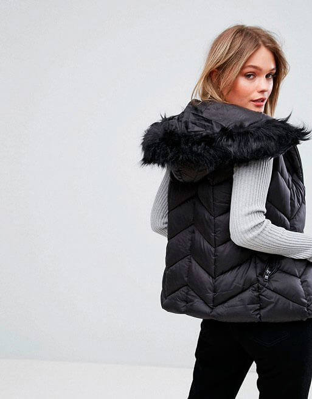

Los detalles de atados, da al athleisure una re-elaboración astuta. El cordón inspirado en el corsé informal y los recortes acanalados traen detalles femeninos a proporciones masculinas y siluetas. Las tonalidades neutrales y los tonos ricos con destellos brillantes, guardan un aspecto contemporáneo.
Los pliegues ponen la atención en la cintura de esta tendencia dominante. Las longitudes más largas se sientan debajo de la rodilla o pastan el tobillo para una sensación más formal, madura con las cinturas del lazo que proporcionan un elemento femenino. Las telas pesadas y los finales metálicos lujosos hacen una declaración mientras que los algodones clásicos tienen una sensación más ocasional.
La moda se une a la función de parkas acolchadas de estilo ártico que vienen con una estética direccional. Paneles extra-grandes y acolchados añaden nuevos niveles de confort y calidez, la creación de una silueta de gran tamaño. Los tonos ruborosos y neutrales suaves mejoran las fabricaciones puffy ligeras.
El debut del New Look de Dior de su primera colección de haute couture en 1947 impulsó un cambio en la silueta femenina que se reflejó en los abrigos del mismo año. El abrigo era largo hasta la media pierna con una falda drapeada asimétrica, hombros anchos y un corte ajustado que marcaba visiblemente la cintura. En esa época, los accesorios de piel eran la tendencia del momento de la moda. Lo complementaban con zapatos de salón del mismo color del abrigo y sombreros de estilo turbante.
A finales de los años 40, los diseñadores recuperaron la forma del abrigo de la época SS, XVIII y XIX. El nuevo estilo llevaba un cuello esmoquin con ribete de piel, un faldón volante a la cintura y una falda pesada con mucha tela. El detalle de lujo del abrigo era el doble anillo de piel en las mangas.
A principios de la década de 1950, el abrigo cambió de estilo de manera radical. Era completamente suelto, el cual permitía llevar prendas anchas por debajo con un corte de estilo blusón, y desestructurado con detalles decorativos como un cuello astracán y botones grandes.
En los años 50, el abrigo se volvió́ relativamente sencillo. Era de lana con cuello ancho, un cierre cruzado, botones a tono y grandes puños vueltos. El detalle más notable del abrigo era el cinturón amarrado a la cintura que creaba la silueta de una falda grandiosa.
El abrigo de capa corta fue un éxito con los modelos del momento. Tenía un cierre con botones a contraste del color del abrigo y se usaba con una falda larga por debajo de la rodilla. Lo complementaban con guantes, un sombrero con broches decorativos y zapatos, todo aquello combinado con el abrigo.
En la década de los 60, el símbolo de estatus era el uso de abrigos de piel. La prenda era envolvente con un cuello amplio de esmoquin, un cinturón ancho y un corte de falda estilo capa. Los estampados de animales también estaban de moda entre las mujeres distinguidas de la época. Los diseñadores más afamados usaban piel de leopardo y accesorios elegantes como un cuello pequeño, botones grandes y mangas anchas.
Enviamos cualquier duda...